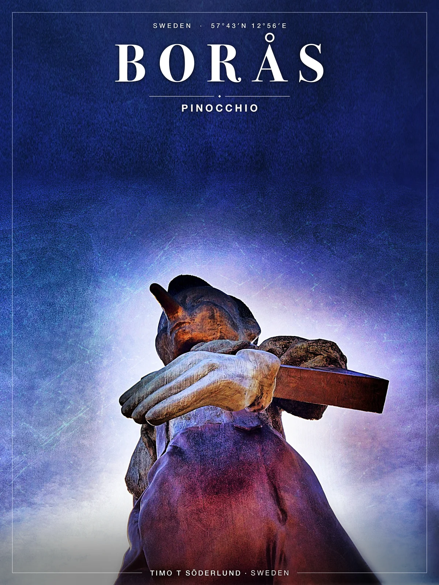

Pinocchio
Walking to Borås · Borås, Sweden
English
Standing nine meters tall at the southern gateway to central Borås, Jim Dine's monumental bronze sculpture Walking to Borås—affectionately known as Pinocchio—commands the skyline with unmistakable presence. Sculpted in dramatic light to reveal every bronze texture and patinated contour, this poster from Borås Poster Project 2026 celebrates one of the most famous public sculptures in Boras, Sweden.
Svenska
Nio meter hög vid södra infarten till centrala Borås reser sig Jim Dines monumentala bronsskulptur Walking to Borås—i folkmun känd som Pinocchio. Med dramatiskt ljus som mejslar fram bronsens patina och karaktärsfulla silhuett hyllar denna poster ur Borås Poster Project 2026 ett av Borås mest älskade och välkända landmärken.
Photographer & Edition: Timo T Söderlund · Borås, Sweden (2026)